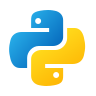
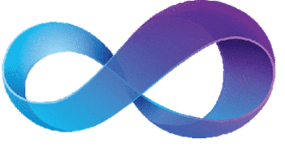

My Top Skills





Hey! My name is Na'imah Bowen, I'm a second-year Software Engineering BSc student at the University of Leicester. Outside of university, I am a telephone researcher and a company representative for Dell Technologies. I love to learn new skills and gain new knowledge from documentaries, books and TV shows. I haven't decided what field of software engineering I want to work in yet, but I'm open to everything. Scroll down to find out more and see my current projects!
A little more about my job, about a year ago, I secured my role with Dell which I have grown to love so much! The rest of the company representatives and employees are like family to me and we have a lot of laughs. On top of that, it's exciting knowing about the latest Ryzen, Intel and Dell tech which is due to be released. I have formal training from those companies and even though the role is more based on customer service- I still learn a lot working there. It's kind of the best of both worlds.
I have been coding for a few years now, I have done computer science since GCSE level where I started by learning VB.net, Python, SQL and HTML. Since starting university last year, we have covered Bash, HTML & CSS (and a little bit of JavaScript), Java and more advanced python. Of recent, I have started learning C++ in my own time. Though I'm new to it- I really enjoy it. My language of preference is VB.net but that's not used too often anymore (much to my dismay :( ). But I'm working on doing more advanced Python projects in the coming months, including opinion mining AI, which I'm really looking forward to undertaking.
This is my first GUI Java project using Swing, it was a lot of fun to make considering I'm not very good the game- trying to win against the AI was a challenge for a while. I learnt a lot of new skills from the project.
Check it OutThis is a simple implementation of a C++ GUI. As I mentioned before, I just started C++ recently so I look forward to working on more complex projects.
Check it OutLast year, I spot a gap in the market where there were no apps like duolingo for children learning Makaton or BSL. I am really passionate about this extended project.
Check it OutI used Python functions to develop this sudoku solver. That is the main skill I wanted to demonstrate with this project- to make the implementation as optimal as possible in the fewest lines of code.
Check it OutBy this project, I was quite comfortable with VB. The methods were easy to implement but my main focus was on the calculation of the financial methods and making the application useable.
Check it Out